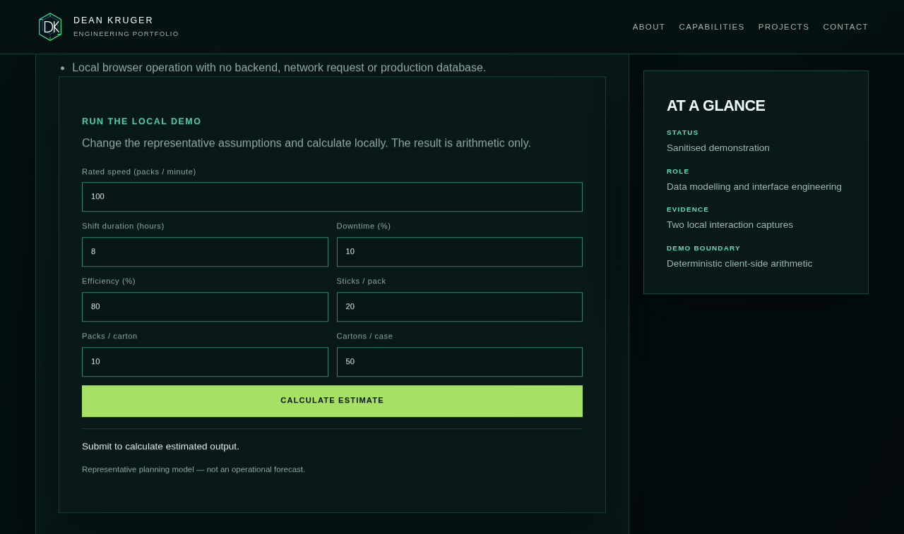
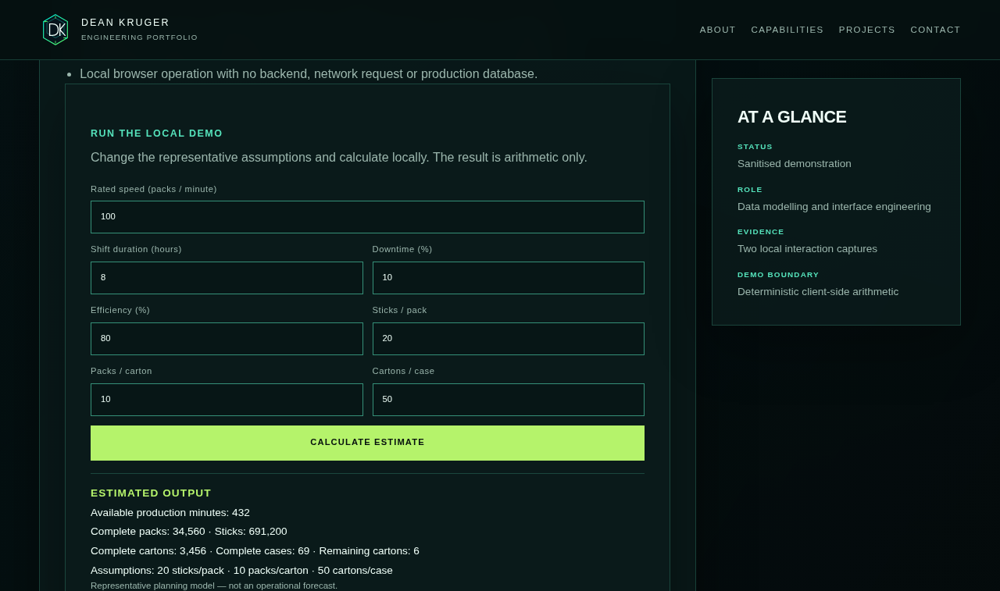

Production Calculator & Planner
A representative local planning model for rated speed, shift duration, downtime, efficiency and packaging conversions.
PROJECT OVERVIEW
The calculator turns explicit assumptions into a repeatable arithmetic chain. It is a small, self-contained browser demonstration designed to make the model inspectable rather than to stand in for an operational planning system.
Inputs cover rated packs per minute, shift hours, downtime, efficiency and three packaging conversions. The output reports available minutes, complete packs, sticks, cartons, cases and remaining cartons.
THE PROBLEM
Capacity conversations become ambiguous when rate, availability, efficiency and unit conversions are mixed together or hidden in a spreadsheet. The engineering problem is to expose the assumptions, validate them before calculation and return a deterministic result that another person can reproduce.
HOW IT IS USED
A user enters a representative line rate, shift duration, downtime and efficiency, confirms the packaging conversions, and submits the form. The browser calculates the result locally and shows the arithmetic outputs. Users can change an assumption and compare scenarios, but they must not treat the synthetic inputs as live production values.
PROJECT EVIDENCE
Sanitized screenshots captured from the current local calculator page show the input state and the same representative assumptions after calculation. They show the real implemented interaction, not the authored hero artwork.


HOW IT WORKS
Inputs are converted to numbers and checked for finite values, positive rates and durations, percentage bounds and whole-number packaging conversions. The calculation then applies downtime, efficiency and floor-based packaging conversion in a fixed order.
ENGINEERING HIGHLIGHTS
- Deterministic arithmetic is isolated in a small reusable calculation function.
- Invalid ranges and fractional packaging conversions are rejected before output is shown.
- Floor-based conversion keeps partial packs and cartons from being presented as complete units.
- Node regression tests cover defaults, boundary percentages, zero efficiency and invalid input cases.
CURRENT CAPABILITIES
- Client-side form for seven representative planning inputs.
- Validation for numeric, positive, percentage and whole-number conversion constraints.
- Deterministic output for available minutes, packs, sticks, cartons, cases and remainder.
- Local browser operation with no backend, network request or production database.
RUN THE LOCAL DEMO
Change the representative assumptions and calculate locally. The result is arithmetic only.
Representative planning model — not an operational forecast.
POTENTIAL / NEXT APPLICATIONS
Could be extended to import an approved schedule or rated-speed catalog, compare multiple scenarios and export a reviewable planning sheet. Potential applications include pre-shift what-if analysis and training on capacity assumptions. The architecture could be adapted to an operational forecast only after authoritative data, permissions, rounding rules and acceptance tests are defined.
TECHNOLOGY
Verified project-specific stack: JavaScript, HTML, CSS and a deterministic browser-side data model. The demonstration has no backend or external runtime dependency.
LIMITATIONS / PRIVACY
This is a representative planning model, not an operational forecast. No private production totals, machine-specific rates, schedule data or authoritative planning source is used. The numbers shown in the demo are synthetic examples only.
RELATED PROJECTS / LINKS
Pair planning assumptions with the operational systems they must never impersonate.
RELATED: BTC PRODUCTION INTELLIGENCE